算力风暴
第一章
黑色星期一
↓ 向下滑动开始阅读
ACT 1晴天霹雳
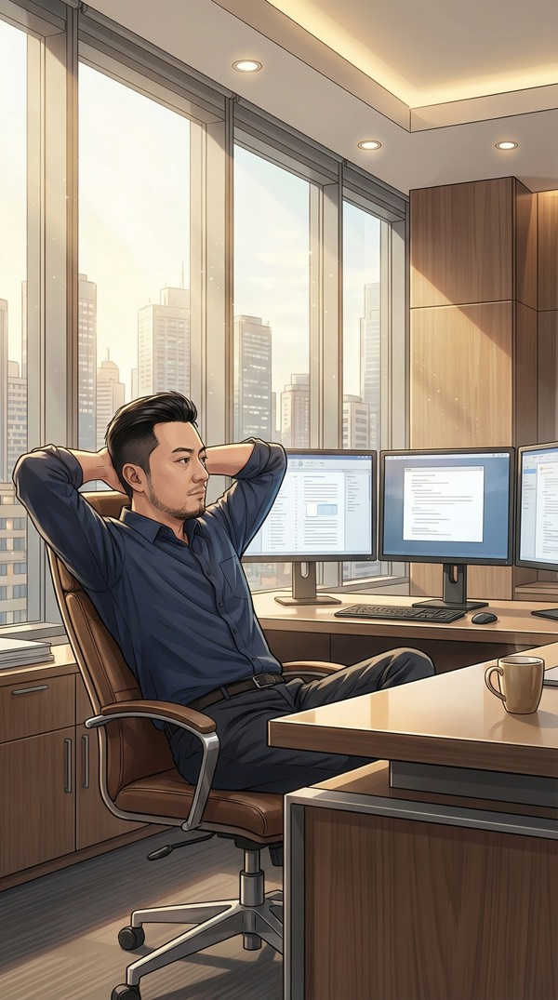
周一早上九点，我端着第二杯美式，觉得今天会是个好日子。直到我看到了那封邮件。
创业三年，终于学会了周一不焦虑。当然，这项技能今天就要报废了。
涨价34%。我反复看了三遍，确认不是愚人节延期玩笑。
34%。这个数字在我脑子里弹来弹去，像一颗穿甲弹在密闭空间里反复弹射。
算力月支出87万。涨34%就是117万。差额30万/月。runway从6个月变成……我闭上眼算了一下……3.2个月。操。
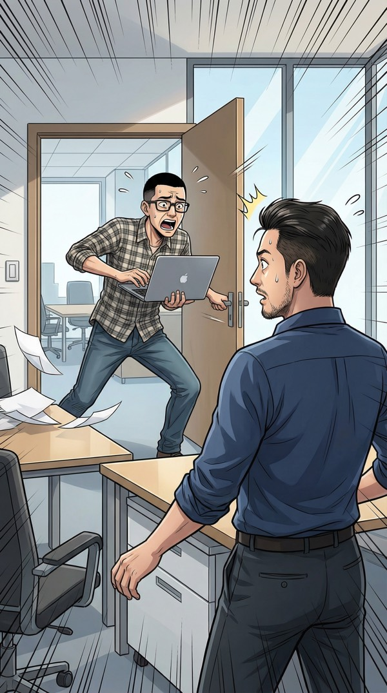
老陈
"老板，你看到邮件了？百度云也涨了。一模一样，34%。"
两家同时涨，同一个数字。这不是涨价，这是联合收割。
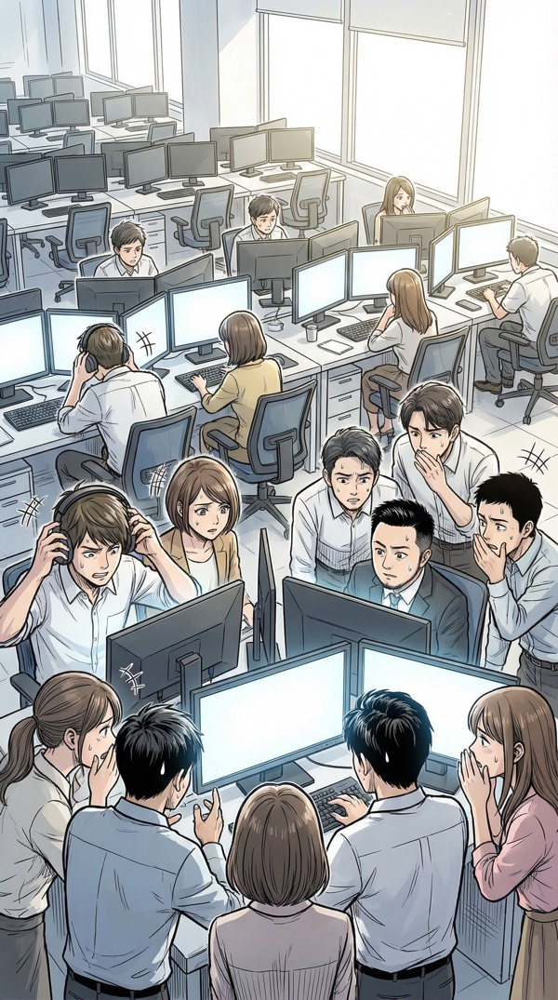
消息像瘟疫一样在办公室蔓延。我能感受到那种无形的恐慌——每个人都在心里算自己的年终奖还有没有。
苏婉
"按新价格算，我们的毛利从18%变成负3%。不是赚少了，是亏钱。每跑一单AI推理，都在烧钱。"
负3%。意思是我们的产品做得越好、用户越多，死得越快。创业六年，第一次遇到"成功=加速死亡"的数学题。
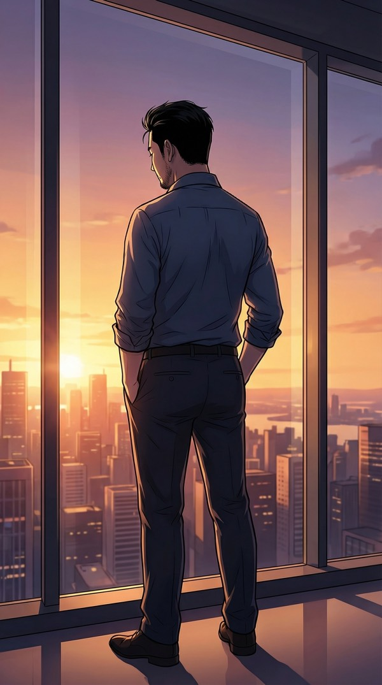
我站在窗前，假装在思考战略。其实我在想的是——三个月后，这间办公室的租约到期时，我还付不付得起违约金。
菩萨心肠，霹雳手段。现在需要的是霹雳手段。但手段在哪？
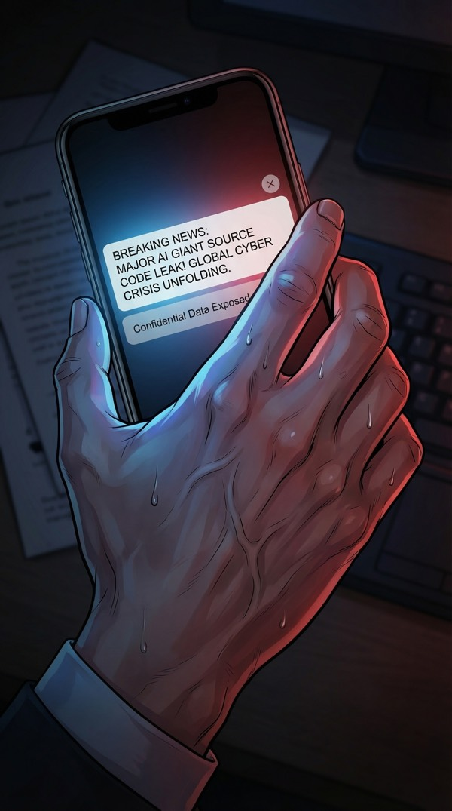
50万行代码。我的黑客直觉在瞬间苏醒——源码泄露意味着什么？意味着有人已经把最前沿的AI架构……免费公开了。
ACT 2黑客直觉
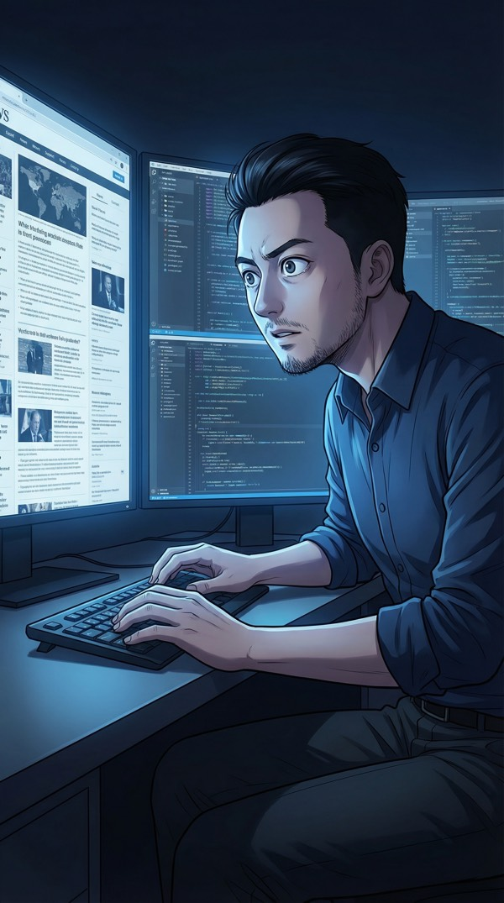
我花了二十分钟扫完所有相关报道。泄露的代码覆盖了核心推理引擎、训练框架、安全机制。GitHub上已经有人开始fork了。
我大学时搞逆向工程那套直觉回来了。别人看到的是灾难新闻，我看到的是一扇门。
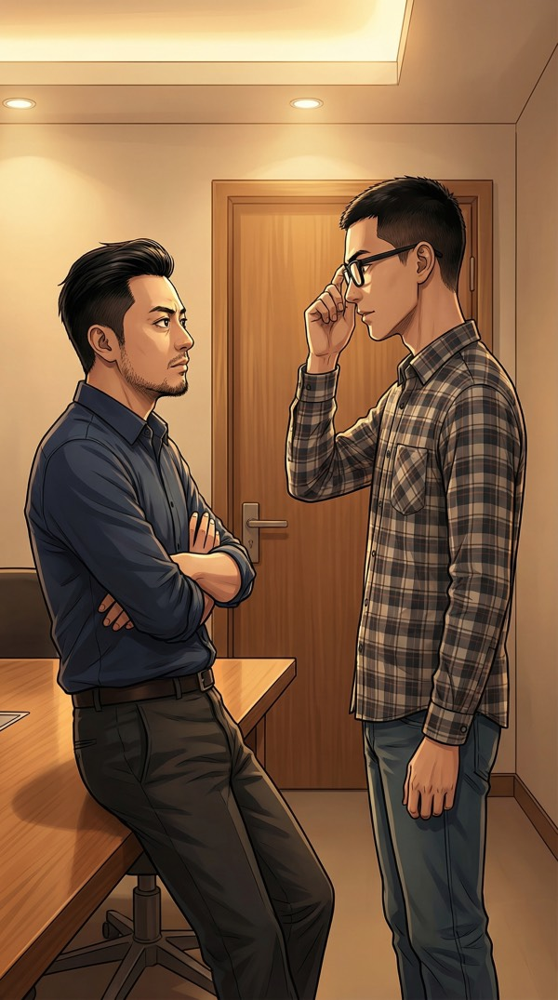
我
"老陈，你看到那个泄露的事了吗？"
老陈
"看了，安全圈都炸了。跟我们有什么关系？"
我
"你觉得，如果我们能基于这批泄露的架构思路，自己搞一套轻量推理引擎……能省多少算力？"
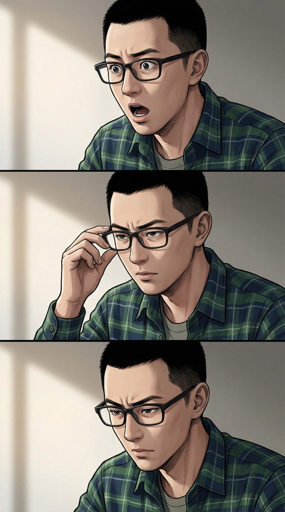
老陈
（沉默五秒后）"理论上……如果他们的稀疏推理方案能用……能砍掉60%的计算量。"
我
"60%。"
老陈
"但是有法律风险。泄露代码，你懂的。"
60%。涨价34%，砍掉60%。不是活下来，是反杀。
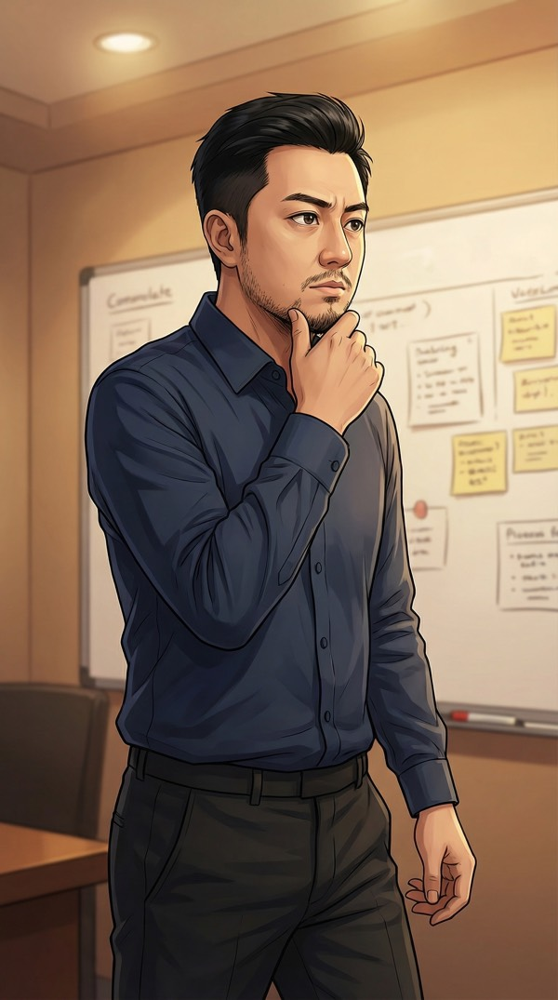
三条路摆在我面前。
⚡ 决策点 1
A.「借鉴」泄露架构思路，自研轻量推理引擎 → 法律灰色地带，但可能一举翻盘。黑客基因在叫我选这个。 ✅
B. 老老实实融资 → 安全但被动，续到年底而已
C. 转型轻量化，砍掉一半产品线 → 活下来但失去未来
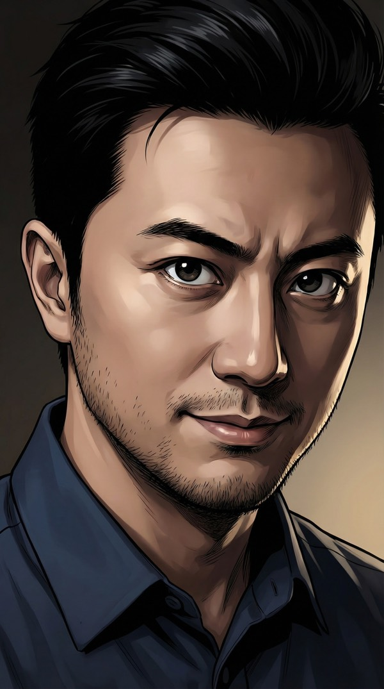
我
"老陈，我们不用他的代码。我们用他的思路。架构思想不受版权保护。你给我72小时，搞个验证原型出来。"
菩萨心肠，霹雳手段。合法地用别人的失误，给自己续命。这不叫投机取巧，这叫生存。
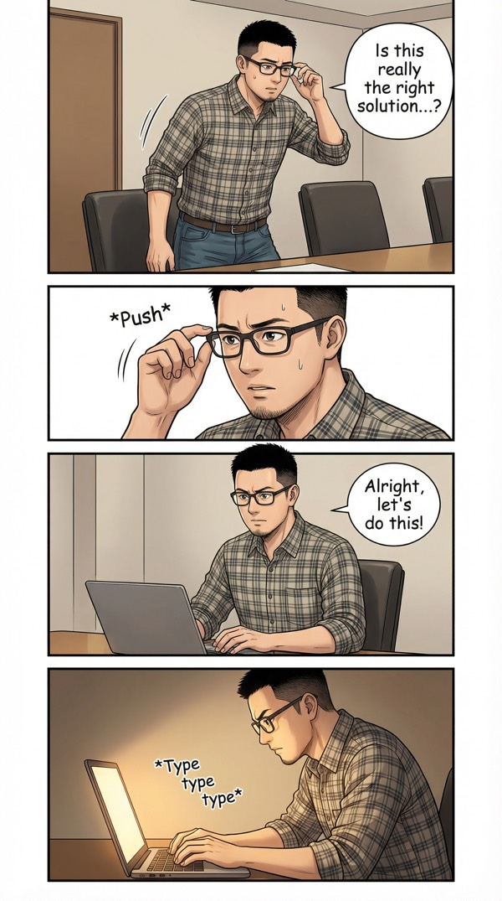
老陈
"72小时够了。但我需要叫上小周和阿明，通宵干。"
我
"加班费翻倍。"
老陈
"你确定公司账上还够发翻倍加班费？"
我
"……先翻倍，账的事我来想办法。"
账上确实不够。但创业者最重要的能力之一就是——在说"没问题"的时候，脸不红。
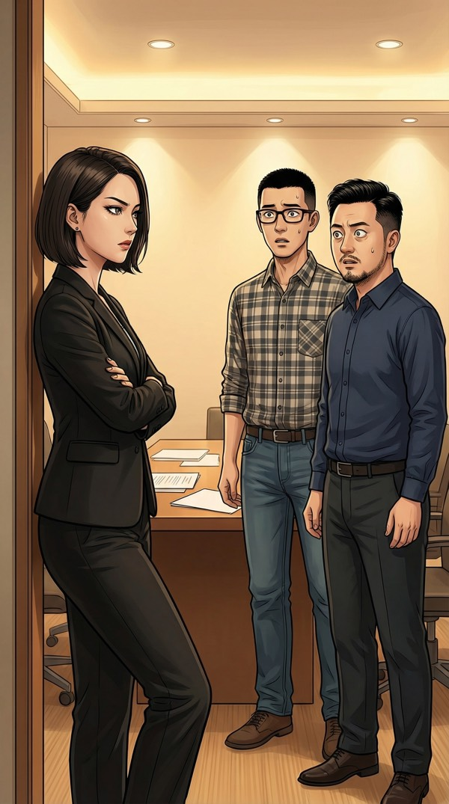
苏婉
"你们俩什么表情？上次你们这个表情，公司差点被工商约谈。"
我
"这次不会。"
苏婉
"上次你也是这么说的。"
苏婉是公司的刹车片。没有她，我和老陈可能已经把车开到悬崖下面了。
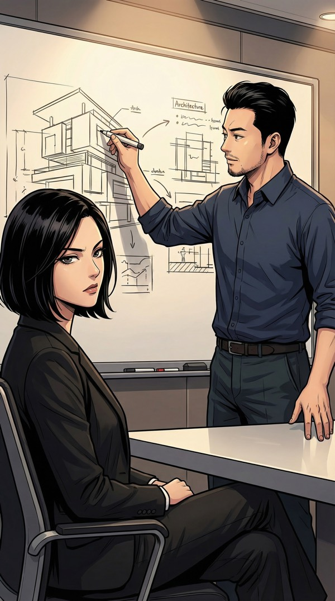
苏婉
"你确定这是合法的？"
我
"架构思想和具体代码是两回事。我们不用一行他们的代码。"
苏婉
（沉默）"……如果真能砍60%成本，我们不仅活下来，还能趁其他公司涨价裁员的时候，抢他们的客户。"
我
"现在你懂了。"
苏婉想通了。一旦CFO站到你这边，事情就有了"可能"。
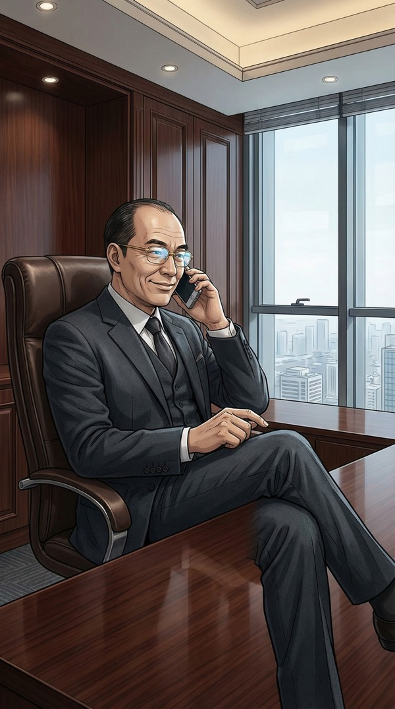
林总
（对电话）"算力涨价？好事啊。那几家小公司撑不住，估值会跌。到时候我们再进场……嗯，特别关注一下朱江那家，他们技术不错，就是命不长。"
我不知道的是，在我决定自救的同一天，有人已经盯上了我的公司——不是来帮忙的，是来捡尸体的。
ACT 3倒计时开始
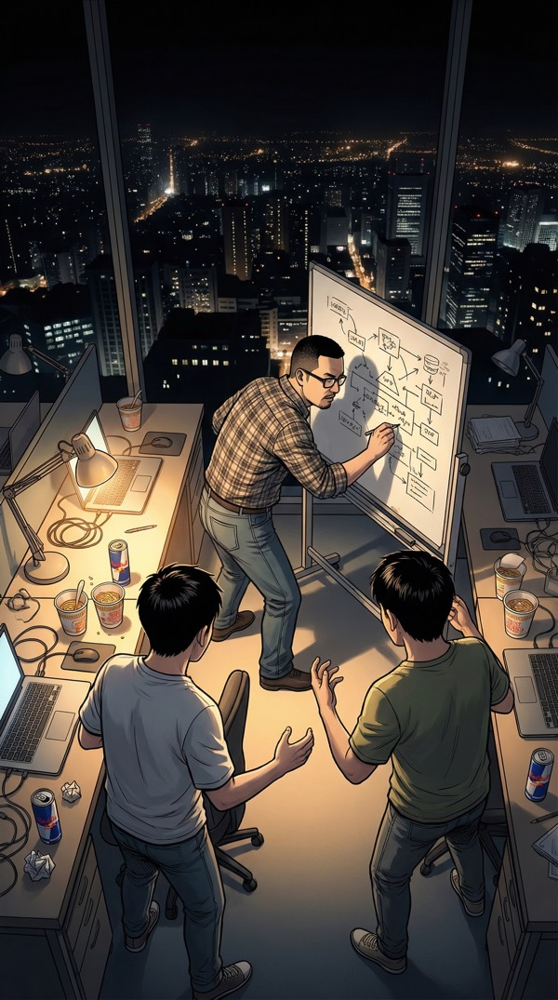
72小时倒计时开始。老陈带着两个最强的工程师扎进了会议室，把门反锁了。我最后一次看到他们桌上有正经食物，是那天的午饭。
老陈在造武器，我在找子弹。72小时里，我打了47个电话，见了6个人，喝了11杯没有味道的咖啡。
创业者的超能力不是智商高，是脸皮厚。被拒绝47次和被拒绝1次，本质上没有区别——反正都是拒绝。
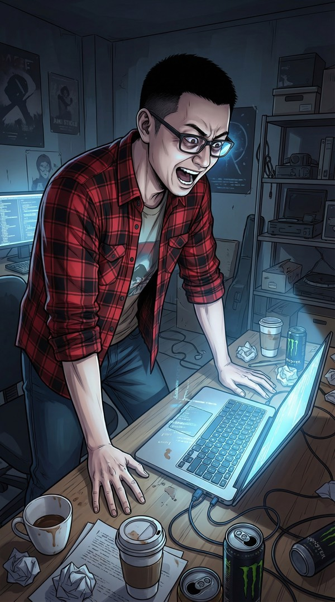
老陈
（冲出门）"朱总！跑通了！推理成本！砍了！"
我
"多少？"
老陈
（伸出手指）"67%。比我预估的还多7个点。"
67%。我的手在发抖，不是因为害怕，是因为——涨价34%，砍掉67%。我们不是活下来了，我们赢了。
苏婉
"先别high。第一，原型不等于产品。第二，你确定竞对不会做同样的事？第三——林总那边，他昨天约了你下周见面。你知道他什么意思吗？"
我
"……来压价收购？"
苏婉
"低价入股。他赌你撑不住。"
苏婉的冷水永远来得恰到好处。她说得对，原型跑通只是第一步。林总那条线，才是真正的暗战。
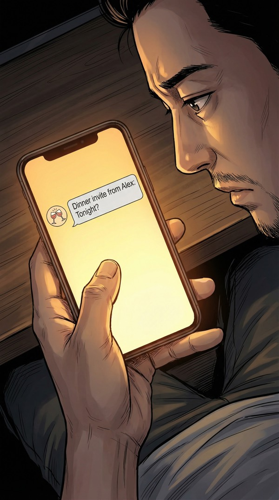
去，还是不去？
⚡ 决策点 2
A. 赴约，但隐藏原型进展，反向试探林总的底牌 → 信息战，以弱示强。 ✅
B. 拒绝，专注产品 → 避免分心但失去情报
C. 赴约并亮出原型成果 → 震慑对手但暴露底牌
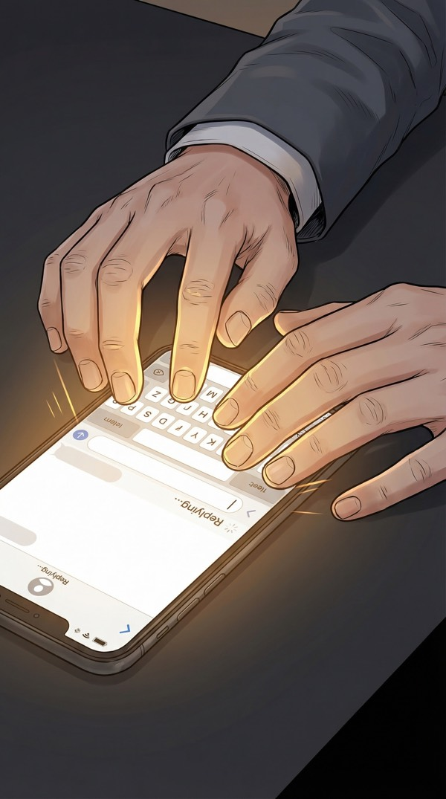
"林总，荣幸之至。周四下午三点见。"
我要去听听他准备出什么价格买我的命。然后告诉他——这条命，不卖。
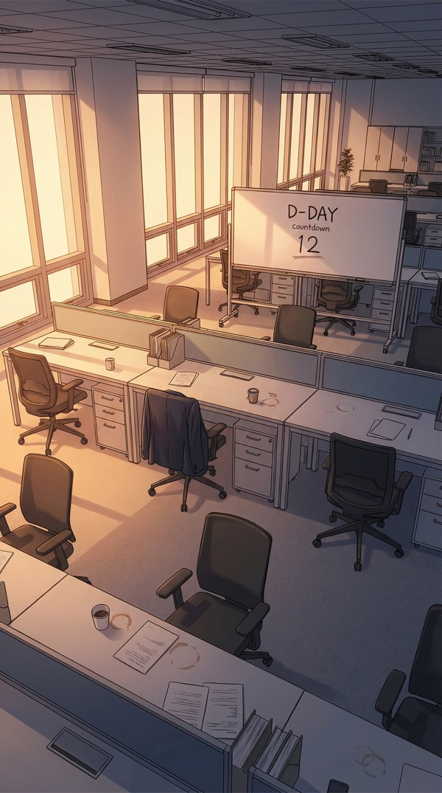
12天。原型要变成产品。47个拒绝要变成1个同意。而林总的饭局，是周四——还有三天。
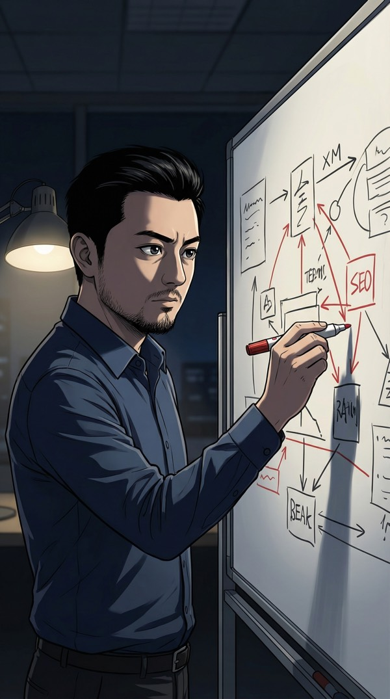
三天后的港丽餐厅，我会坐在一个想买断我公司的人对面，装作什么都不知道地吃着398一位的自助。而他不知道的是——我口袋里揣着一张他看不到的牌。
这是2026年4月6日。后来我把这天叫做"黑色星期一"。
不是因为它有多黑暗——而是因为从这天起，所有的规则都变了。
不是因为它有多黑暗——而是因为从这天起，所有的规则都变了。
未完待续